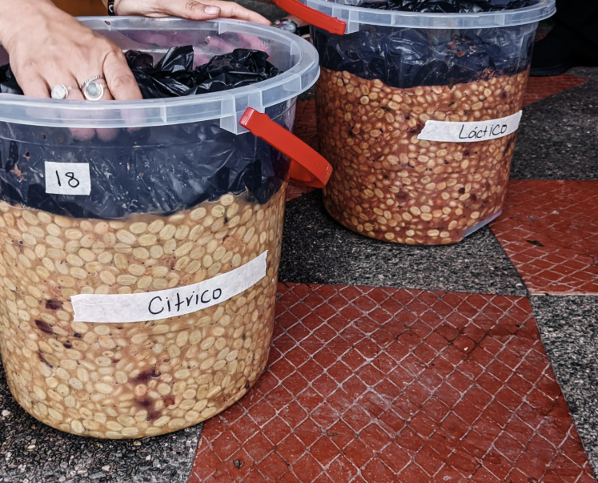

En un coup d'œil :
Process où on favorise (ou inocule) des bactéries lactiques (LAB) pour transformer les sucres en acide lactique. Résultat : douceur crémeuse, texture veloutée, notes yaourt/fruits rouges doux, acidité ronde et équilibrée. C'est le café "comfort", celui qui caresse le palais sans agresser.
Comprendre : La douceur par les bactéries
Le principe de la fermentation lactique
Qui sont les LAB (Lactic Acid Bacteria) ?
Famille de bactéries qui métabolisent les sucres en acide lactique :
Glucose + Fructose → Acide Lactique + CO₂ + Chaleur
(Sans production d'alcool significatif)
Principales souches :
•Lactobacillus plantarum → acidification rapide, notes yaourt
•Leuconostoc mesenteroides → texture crémeuse, diacétyle (beurré)
•Pediococcus → acidité douce, stabilité
Où les trouve-t-on naturellement ?
•Sur la peau des cerises (en faible quantité)
•Dans le mucilage
•Dans l'environnement (fermes laitières, fromageries → contamination croisée)
Pourquoi ce process existe
Le constat :
Dans les fermentations naturelles (Natural, Honey, Anaérobie), les levures dominent → production d'éthanol + esters fruités intenses.
Certains producteurs cherchaient un profil plus doux, moins "funky", plus accessible, tout en gardant complexité et corps.
La solution : Piloter la population microbienne vers les LAB
Deux approches :
•Spontanée : créer conditions favorables aux LAB (T° basse, pH, anaérobiose légère)
•Inoculée : ajouter des souches pures de LAB (style fromage/yaourt)
Résultat : Profil crémeux, velouté, acidité lactique douce, notes laitières élégantes.
Lactic vs Autres fermentations
| Critère | Anaérobie (levures) | Natural | Lactic (LAB) |
|---|---|---|---|
| Micro-organismes dominants | Levures fermentaires | Levures + bactéries mixtes | Bactéries lactiques |
| Produit principal | Éthanol + Esters | Esters + Alcools | Acide lactique |
| Profil acidité | Mixte (acétique/lactique) | Douce, intégrée | Lactique pure, veloutée |
| Notes typiques | Vineux, fruité fermenté | Fruité explosif, confituré | Yaourt, crème, fruits rouges doux |
| Texture | Moyenne | Dense | Soyeuse, crémeuse |
| pH final | 4,0–4,5 | 4,5–5,0 | 3,6–4,2 (plus acide) |
En clair : Le Lactic sacrifie l'intensité fruitée pour gagner en douceur et en texture.
Maîtriser : Le protocole technique
Phase 1 : Récolte et préparation
Objectif : Cerises mûres (≥18 °Brix), homogènes
Tri standard :
•Flottaison : éliminer flottants
•Visuel : retirer verts, surmûris, abîmés
•Lavage doux (optionnel) : réduire flore indésirable
Choix du substrat :
| Option | Avantages | Profil final |
|---|---|---|
| Cerises entières | Plus de sucres, corps dense | Lactic + Natural (fruité présent) |
| Dépulpé + mucilage | Fermentation homogène, contrôle facile | ✅ Lactic pur (recommandé pour débuter) |
Phase 2 : Création de l'environnement LAB-friendly
Les LAB aiment :
•✅ Température modérée (18–28°C)
•✅ Absence d'O₂ (ou très faible)
•✅ pH légèrement acide (5,0–5,5)
•✅ Compétition faible (peu de levures)
Les LAB détestent :
•❌ Température >30°C (favorise acétiques)
•❌ Trop d'O₂ (favorise levures oxydatives)
•❌ pH trop élevé >6,0 (levures prennent le dessus)
Phase 3 : Inoculation (optionnelle mais recommandée)
Approche 1 : Fermentation spontanée (sans inoculation)
Principe : Créer conditions idéales, laisser LAB naturels se développer
Protocole :
•Cerises/dépulpé en cuve légèrement fermée (pas hermétique)
•Température contrôlée 20–24°C
•Attendre 12–24h que LAB prennent le dessus
Avantages : Pas de coût souches, profil "naturel"
Inconvénients : Moins reproductible, risque contamination levures
Approche 2 : Inoculation LAB (recommandée)
Sources de LAB :
| Source | Type | Avantages | Inconvénients |
|---|---|---|---|
| Yaourt nature | Lactobacillus bulgaricus + Streptococcus thermophilus | ✅ Facile, accessible, économique | Souches non spécifiques café |
| Petit-lait fromage | Lactobacillus helveticus, plantarum | Profil crémeux, texture | Variable selon fromage |
| Souches café spécifiques | Lactobacillus plantarum isolé café | ✅ Optimal, reproductible | Coût élevé, accès limité |
| Backslopping | Jus fermentation précédente | Adapté au terroir | Risque dérive si mal géré |
Protocole d'inoculation (yaourt) :
•Préparer le starter :
•1 kg yaourt nature (sans sucre ajouté)
•Diluer dans 5 L d'eau propre (bouillie puis refroidie à 25°C)
•Laisser reposer 2–4h à température ambiante
•Inoculer le lot :
•Pour 100 kg cerises/dépulpé : utiliser 5–10 L de starter
•Mélanger uniformément
•Placer en cuve (légèrement fermée ou anaérobie selon choix)
Densité cible : 10⁴–10⁶ UFC/mL (unités formant colonies)
Phase 4 : Fermentation lactique contrôlée
Durée typique : 24–60h (généralement 36–48h optimal)
Température cible :
| Plage T° | Profil | Risque |
|---|---|---|
| 18–22°C | ✅ Optimal : douceur lactée, yaourt délicat | Très faible |
| 22–26°C | Crémeux intense, notes beurre | Faible |
| 26–30°C | Rapide, intense, risque acidité agressive | Moyen |
| >30°C | ❌ Contamination acétique probable | Élevé |
Recommandation : 20–24°C constant
Ce qui se passe biologiquement :
Phase 1 : Installation des LAB (0–12h)
•LAB inoculés (ou naturels) commencent à se multiplier
•Consommation des sucres simples (glucose, fructose)
•pH commence à descendre : 5,5 → 5,0
•Production CO₂ légère (si cuve fermée)
Phase 2 : Domination lactique (12–36h)
Réactions clés :
Glucose → Acide Lactique + CO₂
Fructose → Acide Lactique + Mannitol (douceur)
Citrate → Diacétyle (beurré) + CO₂
Molécules formées :
•Acide lactique (0,5–2,0 g/L) → acidité douce, veloutée
•Diacétyle (traces) → beurre, crème
•Acétaldéhyde (léger) → pomme douce, yaourt
•Acétate d'éthyle (faible) → fruité léger
Particularité LAB : Contrairement aux levures, les LAB produisent peu d'alcool et peu d'esters lourds → profil propre, doux, sans "funky".
Phase 3 : Stabilisation (36–60h)
•pH atteint 3,8–4,2 (très acide)
•Activité LAB ralentit (auto-inhibition par acidité)
•Mucilage se liquéfie progressivement (pectines dégradées)
•Texture devient crémeuse, onctueuse
Suivi de la fermentation :
| Paramètre | Début | Milieu (24h) | Fin |
|---|---|---|---|
| pH | 5,5–6,0 | 4,5–5,0 | 3,8–4,2 |
| T° interne | Ambiante | +1–2°C | Stable |
| Odeur | Neutre/fruité léger | Yaourt doux | Crème, lacté |
| Goût liquide | Sucré-acide | Acide doux | Lacté, velouté |
Indicateurs de fin optimale :
•pH stabilisé 3,8–4,2
•Odeur yaourt/crème nette, pas aigre/piquant
•Mucilage liquéfié mais pas mousseux
•Texture onctueuse au toucher
⚠️ Alerte défaut : Odeur vinaigre/aigre = contamination acétique → stopper immédiatement
Phase 5 : Lavage et arrêt fermentation
Protocole :
•Drainer le liquide (jus de fermentation lactique)
•Option : conserver pour backslopping futur
•Laver à l'eau froide (15–20°C) abondamment
•Objectif : stopper activité LAB, éliminer acide lactique de surface
•Rincer jusqu'à eau claire (pas laiteuse)
•Égoutter sur tables ou paniers perforés
Pourquoi laver ?
L'acide lactique résiduel en surface peut donner une acidité trop agressive en tasse. Le lavage équilibre le profil.
Phase 6 : Séchage post-lactique
Important : Grain chargé en acide lactique interne → séchage doux pour préserver la douceur.
Paramètres :
| Phase | Durée | T° max | Brassage |
|---|---|---|---|
| Initiale | 2–3 j | 30°C | 4–5×/jour |
| Intermédiaire | 3–5 j | 35°C | 3×/jour |
| Finale | 2–4 j | 40°C | 2×/jour |
Vitesse : <1,2% H₂O/jour (modéré)
Méthode : Lits africains, ombre partielle (éviter soleil direct = perte douceur)
Phase 7 : Repos en parche
Durée : 4–8 semaines
Objectif :
•Stabilisation de l'acide lactique dans le grain
•Maturation de la texture crémeuse
•Équilibrage de l'acidité
Évolution typique :
•Semaine 0–2 : Acidité lactique vive, texture en formation
•Semaine 4–6 : Profil s'arrondit, crémeux émerge
•Semaine 8 : ✅ Optimal : velours, équilibre parfait
Approfondir : Chimie et signature crémeuse
Molécules clés du Lactic
La fermentation lactique se distingue par une dominance d'acide lactique avec production de diacétyle et acétaldéhyde, mais peu d'esters lourds.
| Molécule | Famille | Arôme | Seuil (ppb) | Lactic vs Anaérobie |
|---|---|---|---|---|
| Acide lactique | Acide | Velouté, yaourt, doux | — | 10–15× supérieur |
| Diacétyle | Cétone | Beurre, crème | 10–50 | 5× supérieur |
| Acétaldéhyde | Aldéhyde | Pomme douce, yaourt | 5–10 | 3× supérieur |
| 2,3-Pentanedione | Cétone | Crème légère, toffee | 20–50 | Présent (unique Lactic) |
| Mannitol | Polyol | Douceur, texture | — | Élevé |
| Isoamyl-acétate | Ester | Banane léger | 0,5–2 | Faible (LAB produisent peu) |
Ce qui est faible ou absent :
•Esters fruités lourds (éthyl-butanoate, hexanoate)
•Éthanol (production minimale)
•Composés soufrés (si bien géré)
Pourquoi le profil est unique
Acide lactique → perception veloutée, ronde (vs acide citrique = piquant)
Diacétyle → texture crémeuse, beurré léger
Mannitol → douceur en bouche, texture
Peu d'alcool/esters → profil propre, pas "funky"
Résultat : Un café doux, rond, crémeux, accessible sans agressivité.
Profil sensoriel — La douceur lactée
| Attribut | Lavé | Anaérobie | Natural | Lactic |
|---|---|---|---|---|
| Acidité (type) | Citrique, vive | Mixte | Douce | Lactique, veloutée |
| Douceur | ⭐⭐⭐ | ⭐⭐⭐⭐ | ⭐⭐⭐⭐⭐ | ⭐⭐⭐⭐⭐ |
| Texture | Légère | Moyenne | Dense | Crémeuse, soyeuse |
| Fruité | ⭐⭐⭐⭐ | ⭐⭐⭐⭐⭐ | ⭐⭐⭐⭐⭐ | ⭐⭐⭐ |
| Notes laitières | ⭐ | ⭐ | ⭐ | ⭐⭐⭐⭐⭐ |
| Corps | ⭐⭐ | ⭐⭐⭐⭐ | ⭐⭐⭐⭐⭐ | ⭐⭐⭐⭐ |
| Accessibilité | ⭐⭐⭐⭐ | ⭐⭐ | ⭐⭐ | ⭐⭐⭐⭐⭐ |
Descripteurs typiques d'un Lactic réussi :
•Notes laitières : yaourt nature, crème fraîche, beurre doux, fromage blanc
•Fruits rouges doux : fraise des bois, framboise, cerise douce (pas acidulée)
•Texture veloutée : sensation crémeuse, soyeuse en bouche
•Acidité ronde : malique douce, lactique intégrée (pas piquante)
•Douceur sucrée : miel, caramel léger
•Finale longue : persistance crémeuse, pas de sécheresse
En tasse, un bon Lactic est reconnaissable : onctuosité immédiate, acidité caressante (jamais agressive), notes yaourt/crème élégantes.
En pratique : Roast tips pour Lactic
Comportement du grain
Structure : Similaire lavé/anaérobie (pas de pulpe séchée)
Particularité : Concentration élevée d'acide lactique dans la matrice → besoin de développement légèrement plus long pour intégrer l'acidité.
Conséquence : Torréfaction modérée avec développement prolongé pour transformer l'acidité lactique en douceur caramélisée.
Profil recommandé (base Loring)
Charge : 190–195°C
↓
Drying : 4–5 min, ROR 22–26°C/min progressif
→ évaporer eau, préparer grain
↓
Maillard : 28–32%, ROR 10–14°C/min constant
→ développer douceur, transformer acide lactique
↓
Premier Crack : 198–202°C
↓
Développement : 14–16% (plus long que autres process)
→ ROR 4–5°C/min, descente douce
→ créer rondeur, intégrer acidité
↓
Drop : 204–207°C (filtre/espresso)
Pourquoi ce profil spécifique
| Phase | Justification |
|---|---|
| Charge modérée | Préserver douceur lactée |
| Maillard moyen-long | Transformer acide lactique en douceur caramélisée |
| Développement long | Intégrer l'acidité, créer rondeur, texture veloutée |
| Drop moyen-élevé | Équilibrer acidité lactique + sucrosité |
Principe : On "apprivoise" l'acidité lactique par un développement plus long, sans la détruire.
Deux profils selon usage
Filtre — Douceur lactée mise en avant
Drop : 204–206°C
Développement : 14–15%
Résultat : Yaourt, fruits rouges doux, acidité ronde, texture soyeuse
Espresso — Crémeux maximal
Drop : 206–208°C
Développement : 15–16%
Résultat : Crème, caramel lacté, texture veloutée, douceur maximale
Note : Le Lactic est EXCELLENT en espresso (contrairement au CM). L'acidité lactique + développement long = profil onctueux idéal.
Erreurs fréquentes
| Erreur | Symptôme | Correction |
|---|---|---|
| Sous-développement (<13%) | Acidité agressive, yaourt tourné | Développer 14–16% |
| Maillard trop court (<25%) | Acidité non intégrée, tasse déséquilibrée | Allonger 28–32% |
| Drop trop tardif (>210°C) | Perte douceur lactée, amer | Drop 204–208°C max |
| ROR trop élevé | Acidité brûlée, notes chimiques | Modérer flux thermique |
Point clé : Le Lactic DEMANDE un développement plus long que les autres process. C'est contre-intuitif mais essentiel.
Les risques et défauts du Lactic
Défauts liés au process
| Défaut | Cause | Molécules | Notes | Prévention |
|---|---|---|---|---|
| Sour (acétique) | T° >28°C ou contamination | Acide acétique | Vinaigre, aigre | T° 20–24°C, hygiène |
| Yaourt tourné | Sur-fermentation (>60h) | Acide lactique excès | Aigre agressif, désagréable | Stopper pH 3,8–4,2 |
| Texture molle | Séchage trop lent post-lactic | Pectines mal dégradées | Bouche pâteuse | Séchage <1,2%/j |
| Flat | LAB insuffisants (spontané raté) | Peu d'acide lactique | Tasse creuse, aqueuse | Inoculer LAB |
| Butyrique | Contamination anaérobie chaude | Acide butyrique | Putride, fromage rance | T° <26°C, O₂ léger |
Défauts liés à la torréfaction
| Défaut | Cause roast | Impact |
|---|---|---|
| Acidité agressive | Sous-développement | Yaourt tourné, déséquilibré |
| Crémeux brûlé | Drop trop tardif | Amer, perte douceur lactée |
| Baked | Maillard insuffisant | Acidité plate, texture absente |
Conclusion : Le Lactic comme confort ultime
La fermentation lactique incarne la recherche de douceur et d'accessibilité sans sacrifier la complexité.
Ce qu'elle apporte :
•Douceur crémeuse, texture veloutée inégalée
•Acidité lactique ronde, caressante (jamais agressive)
•Notes yaourt/crème/fruits rouges doux, élégantes
•Accessibilité maximale (grand public + connaisseurs)
•Excellent en espresso (onctuosité naturelle)
Ce que cela coûte :
•Savoir-faire LAB : inoculation, contrôle T°/pH
•Infrastructure : cuves, thermomètres, souches (yaourt ou pures)
•Moins d'intensité fruitée que Natural/Anaérobie/CM
•Risque de profil "plat" si mal exécuté
Comment cela fonctionne, en résumé : Cerises/dépulpé → inoculation LAB (yaourt ou souches pures) → fermentation 36–48h à 20–24°C → LAB transforment sucres en acide lactique + diacétyle → pH descend à 3,8–4,2 → lavage pour stopper → séchage doux → repos 6–8 semaines → torréfaction avec développement long (14–16%) pour intégrer acidité.
Les résultats obtenus : Un café réconfortant, velouté, accessible. Notes yaourt nature, crème fraîche, fruits rouges doux. Texture soyeuse, acidité ronde qui caresse. Finale longue, crémeuse, sans agressivité. Score typique : 84–88 points (très bon, mais rarement 90+ car moins "wow" que CM). Idéal pour espresso latte/cappuccino, filtres doux, introduction au café de spécialité.
Pour aller plus loin
Process connexes :
•Chapitre Process → Anaérobie : fermentation avec levures dominantes
•Chapitre Process → CM : fermentation intracellulaire, floral
•Chapitre Process → Co-fermentation : Lactic + ajout substrats
Défauts :
•Chapitre Défauts → Sour, Butyrique, Texture molle
Chimie :
•Chapitre Chimie → Acide lactique et perception veloutée
•Chapitre Chimie → Diacétyle (notes beurre/crème)
Torréfaction :
•Section Roast → Développement long pour intégrer acidité lactique
💡 Note de formation : Le Lactic est le process "passerelle" parfait entre café commercial et spécialité. Il offre complexité + accessibilité, ce qui en fait un excellent choix pour élargir sa clientèle. C'est aussi le process le plus espresso-friendly des fermentations expérimentales : là où un CM ou Natural peuvent être trop intenses/acides en espresso, le Lactic brille par sa rondeur naturelle. Pour les cafés-restaurants cherchant un mono-origine signature en espresso, c'est souvent le meilleur compromis. En formation, utilisez le Lactic pour enseigner l'importance du développement adapté au process : trop court = acidité agressive, trop long = perte caractère. C'est le process où la torréfaction fait 50% du résultat final.